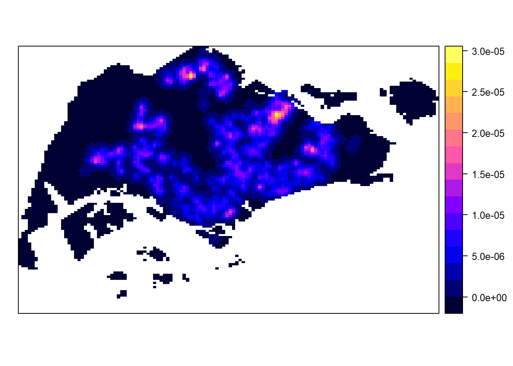

install.packages("maptools", repos="https://packagemanager.posit.co/cran/2023-10-13")In-Class_Ex02
pacman::p_load(sf, raster, spatstat, tmap, tidyverse, maptools)Importing the spatial data and transforming their coordinate reference system (CRS).
sg_sf <- st_read(dsn = "C:/jhui-chen/ISSS626-GAA/Hands-on_Ex/Hands-on_Ex02/data", layer="CostalOutline")%>%
st_transform(crs = 3414)Reading layer `CostalOutline' from data source
`C:\jhui-chen\ISSS626-GAA\Hands-on_Ex\Hands-on_Ex02\data' using driver `ESRI Shapefile'
Simple feature collection with 60 features and 4 fields
Geometry type: POLYGON
Dimension: XY
Bounding box: xmin: 2663.926 ymin: 16357.98 xmax: 56047.79 ymax: 50244.03
Projected CRS: SVY21st_crs(sg_sf)Coordinate Reference System:
User input: EPSG:3414
wkt:
PROJCRS["SVY21 / Singapore TM",
BASEGEOGCRS["SVY21",
DATUM["SVY21",
ELLIPSOID["WGS 84",6378137,298.257223563,
LENGTHUNIT["metre",1]]],
PRIMEM["Greenwich",0,
ANGLEUNIT["degree",0.0174532925199433]],
ID["EPSG",4757]],
CONVERSION["Singapore Transverse Mercator",
METHOD["Transverse Mercator",
ID["EPSG",9807]],
PARAMETER["Latitude of natural origin",1.36666666666667,
ANGLEUNIT["degree",0.0174532925199433],
ID["EPSG",8801]],
PARAMETER["Longitude of natural origin",103.833333333333,
ANGLEUNIT["degree",0.0174532925199433],
ID["EPSG",8802]],
PARAMETER["Scale factor at natural origin",1,
SCALEUNIT["unity",1],
ID["EPSG",8805]],
PARAMETER["False easting",28001.642,
LENGTHUNIT["metre",1],
ID["EPSG",8806]],
PARAMETER["False northing",38744.572,
LENGTHUNIT["metre",1],
ID["EPSG",8807]]],
CS[Cartesian,2],
AXIS["northing (N)",north,
ORDER[1],
LENGTHUNIT["metre",1]],
AXIS["easting (E)",east,
ORDER[2],
LENGTHUNIT["metre",1]],
USAGE[
SCOPE["Cadastre, engineering survey, topographic mapping."],
AREA["Singapore - onshore and offshore."],
BBOX[1.13,103.59,1.47,104.07]],
ID["EPSG",3414]]childcare_sf <- st_read("C:/jhui-chen/ISSS626-GAA/Hands-on_Ex/Hands-on_Ex02/data/child-care-services-geojson.geojson") %>%
st_transform(childcare_sf, crs = 3414) ##change to svy21 and epsg code to 3414Reading layer `child-care-services-geojson' from data source
`C:\jhui-chen\ISSS626-GAA\Hands-on_Ex\Hands-on_Ex02\data\child-care-services-geojson.geojson'
using driver `GeoJSON'
Simple feature collection with 1545 features and 2 fields
Geometry type: POINT
Dimension: XYZ
Bounding box: xmin: 103.6824 ymin: 1.248403 xmax: 103.9897 ymax: 1.462134
z_range: zmin: 0 zmax: 0
Geodetic CRS: WGS 84st_crs(childcare_sf) Coordinate Reference System:
User input: EPSG:3414
wkt:
PROJCRS["SVY21 / Singapore TM",
BASEGEOGCRS["SVY21",
DATUM["SVY21",
ELLIPSOID["WGS 84",6378137,298.257223563,
LENGTHUNIT["metre",1]]],
PRIMEM["Greenwich",0,
ANGLEUNIT["degree",0.0174532925199433]],
ID["EPSG",4757]],
CONVERSION["Singapore Transverse Mercator",
METHOD["Transverse Mercator",
ID["EPSG",9807]],
PARAMETER["Latitude of natural origin",1.36666666666667,
ANGLEUNIT["degree",0.0174532925199433],
ID["EPSG",8801]],
PARAMETER["Longitude of natural origin",103.833333333333,
ANGLEUNIT["degree",0.0174532925199433],
ID["EPSG",8802]],
PARAMETER["Scale factor at natural origin",1,
SCALEUNIT["unity",1],
ID["EPSG",8805]],
PARAMETER["False easting",28001.642,
LENGTHUNIT["metre",1],
ID["EPSG",8806]],
PARAMETER["False northing",38744.572,
LENGTHUNIT["metre",1],
ID["EPSG",8807]]],
CS[Cartesian,2],
AXIS["northing (N)",north,
ORDER[1],
LENGTHUNIT["metre",1]],
AXIS["easting (E)",east,
ORDER[2],
LENGTHUNIT["metre",1]],
USAGE[
SCOPE["Cadastre, engineering survey, topographic mapping."],
AREA["Singapore - onshore and offshore."],
BBOX[1.13,103.59,1.47,104.07]],
ID["EPSG",3414]]st_union() This function is to dissolve the borders and combine all the polygons (SG regions) together
as.ppp if input data is as sf object, use this. Use sf package.This function is from spatstat This create point object
childcare_ppp <- as.ppp(childcare_sf)Warning in as.ppp.sf(childcare_sf): only first attribute column is used for
markschildcare_pppMarked planar point pattern: 1545 points
marks are of storage type 'character'
window: rectangle = [11203.01, 45404.24] x [25667.6, 49300.88] unitsas.owin This function is from spatstat This create boundaries for the data
ppp Use this if your input data is sp object. Convert generic sp to ppp. If you can, don’t use sp. involve two steps.
sg_owin <- as.owin(sg_sf)
childcareSG_ppp = childcare_ppp[sg_owin]kde_childcareSG_bw <- density(childcareSG_ppp,
sigma=bw.diggle,
edge=TRUE,
kernel="gaussian")Kernel density estimation this is the spatstat.geom method
gridded_kde_childcareSG_bw <- as(kde_childcareSG_bw, "SpatialGridDataFrame")
spplot(gridded_kde_childcareSG_bw)
This ensure monte carlo simulation will not keep changing the values.
Set simulations to 1234, to consistently obtain values
#set.seed(1234)